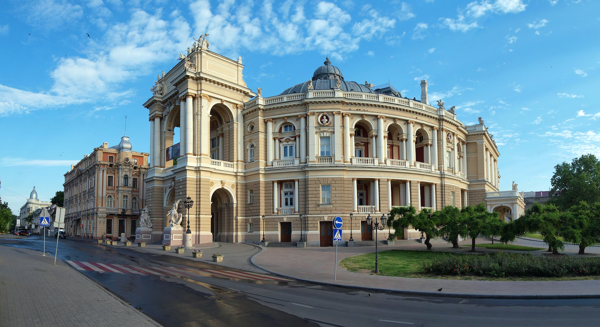
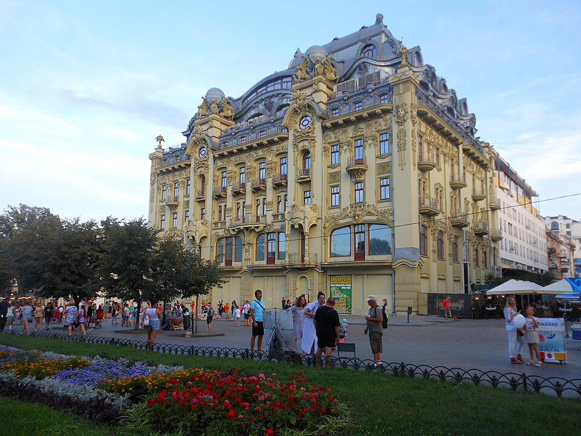
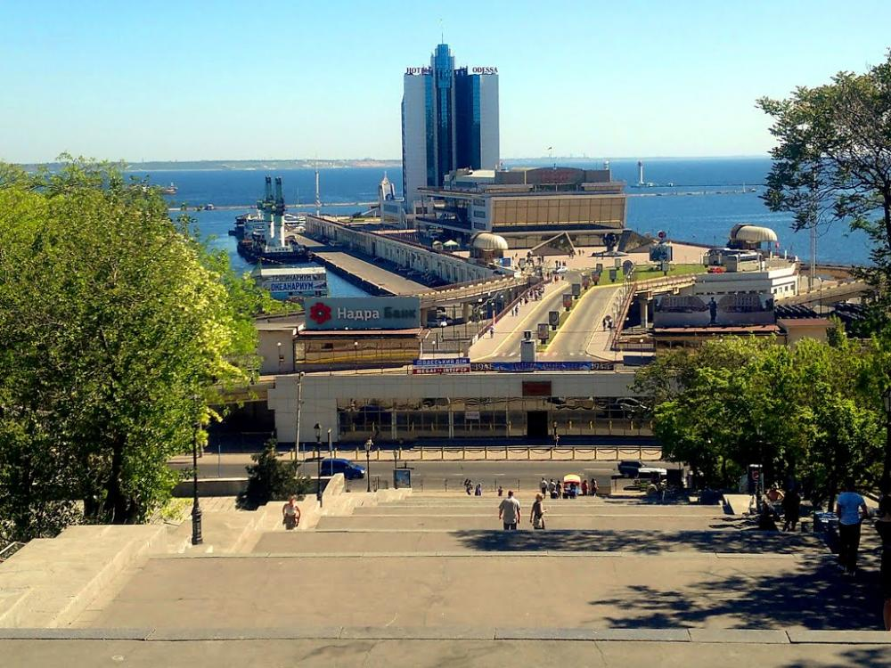

Одеський національний академічний театр опери та балету - це не просто головна візитівка міста, а один із найкрасивіших театрів світу.
Вулиця Дерибасівська - це сердце Одеси та її душа. Пішохідна вулиця, викладена старовинною бруківкою, де завжди панує атмосфера свята, пахне кавою та грає вулична музика. Це місце, де історія зустрічається з сучасністю в самому центрі міста.
Потьомкінські сходи - це не просто 192 сходинки, а справжній шедевр інженерної думки та парадний вхід до Одеси з боку моря.
